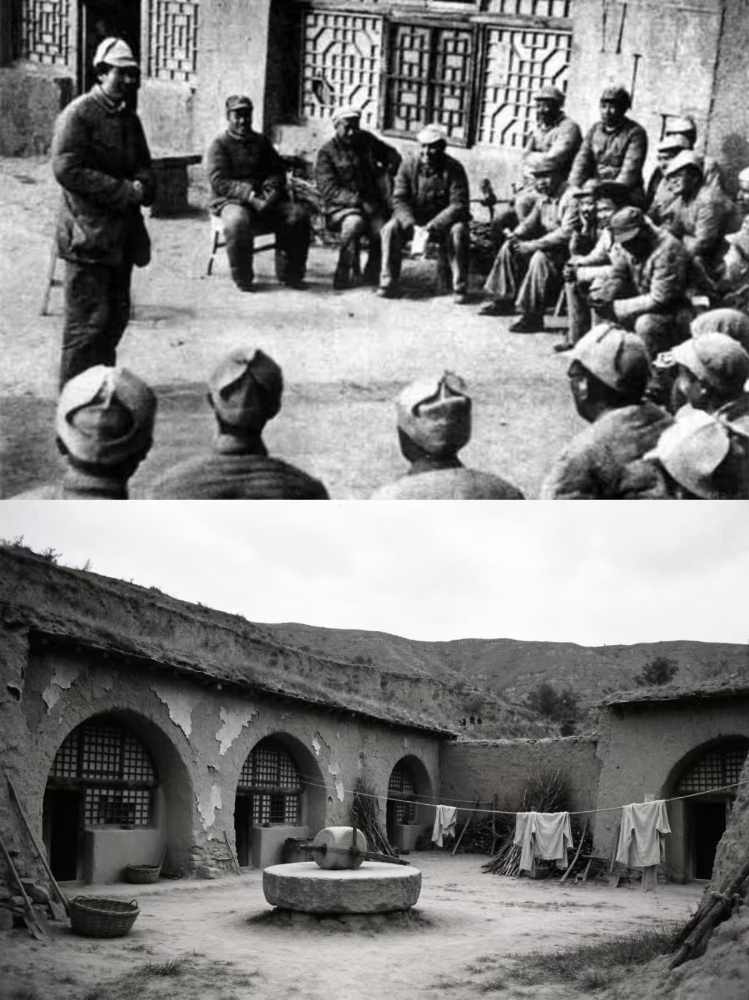

信仰与牺牲
烽火中的青春选择
抗日战争与解放战争时期，山西妇女通过识字教育、生产劳动、救护和支前等方式进入公共行动。基层妇女组织成为连接家庭、乡村与革命动员的重要力量。
时代注脚：妇女救国组织、支前生产与基层动员不断发展。

SHANXI WOMEN · DIGITAL EXHIBITION
山西女性时代记忆数字展馆
从烽火岁月到建设热潮，再到非遗传承与乡村振兴，沿着三位山西女性的人生坐标，触摸跨越时代的信念、劳动与创造。
进入展馆↓01 · CHRONICLE
选择一个时代，展馆将同步切换人物、事件与叙事色彩。
信仰与牺牲
抗日战争与解放战争时期，山西妇女通过识字教育、生产劳动、救护和支前等方式进入公共行动。基层妇女组织成为连接家庭、乡村与革命动员的重要力量。
时代注脚：妇女救国组织、支前生产与基层动员不断发展。

02 · PORTRAITS
三位人物，三种时代坐标，共同构成一条不断延伸的女性奋斗脉络。
03 · FOOTPRINTS
点击地图坐标，查看人物与山西地域之间的真实联系。
03 / 11
地图记录人物活动地与纪念、实践场所，呈现女性行动如何嵌入吕梁与太行之间的真实空间。
空间脉络：吕梁文水的革命记忆 → 太行平顺的劳动与制度实践 → 晋中和顺的非遗传承。
04 · REFERENCE
在相同劳动条件与劳动成果下，劳动报酬不因性别而区别对待。申纪兰相关史料见人物档案来源。
在既有省级非物质文化遗产名录基础上补充认定的代表性项目，强调保护、传承与传播。
全国人民代表大会是最高国家权力机关。人物档案中的代表经历按公开生平资料标注。